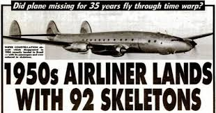

Modern aircraft are testaments to engineering progress since the dawn of commercial aviation last century.However, there are some puzzling circumstances of planes that have gone missing. With satellites and radar systems so advanced, it is almost unheard of for aircraft to simply vanish..However there have in recent years been certain incidents that have mystified investigators around the world, with only a range of theories as to what happened to aircraft that disappeared off radar.
From Amelia Earhart to Malaysia Airlines Flight MH370, planes have simply vanished
FLIGHT-513

On September 4, 1954, Santiago Airlines Flight 513 departed from Aachen, West Germany, destined for Porto Alegre, Brazil. The flight should have taken around 18 hours.Instead, it took 35 years. On October 12, 1989, without any contact with air traffic controllers, Santiago Flight 513 was spotted circling the Porto Alegre airport, where it eventually made a successful landing.When it went missing over the Atlantic Ocean, emergency search and rescue teams scoured the area, but to no avail, eventually giving up the aircraft, and everyone aboard, for lost.It would be an understatement to say that when Flight 513 flew into Porto Alegre it was unexpected. At first, authorities demanded to know why its pilot had flown in without warning.But when they approached the craft and took note of its age, they were baffled to discover that it belonged to Santiago Airlines, an airline that had shut its doors in 1956.Upon opening the doors, authorities found something still more shocking: the skeletons of 92 people, buckled into their seats. The skeletal body of Captain Miguel Victor Cury was found in his pilot’s seat, hands on the controls, with the engine still humming.
Malaysia Airlines Flight MH370
The disappearance of Malaysia Airlines Flight MH370 carrying 239 people is one of the world’s greatest aviation mysteries.The aircraft vanished en-route from Kuala Lumpur to Beijing on March 8th, 2014. Rescuers spent months scouring the seabed and the southern Indian Ocean but efforts were eventually stood down.
Air France Flight 447
Ten years ago Air France Flight 447 from Rio de Janeiro to Paris crashed into the Atlantic with the loss of all 216 passengers and 12 crew.
The tragedy was keenly felt in Ireland as it claimed the lives of three Irish doctors, Jane Deasy from Rathgar, Co Dublin, Aisling Butler from Roscrea, Co Tipperary, and Eithne Walls from Ballygowan, Co Down.
The cause was a mystery until the black box flight data and voice recorders recovered from the bottom of the ocean showed the aircraft’s speed recorders had frozen during a storm. The search cost €31 million and took almost two years.
Amelia Earhart
On July 2nd, 1937, Amelia Earhart and navigator Fred Noonan took off from Lae, New Guinea, in a Lockheed Electra 10E on one of the last legs of their around-the-world flight.
However, the Lockheed Electra disappeared over the Pacific and the ground- breaking aviator was never heard from again.
Flight 19 torpedo bombers
At the height of World War II, the United States Navy dispatched five torpedo bombers on a routine training flight over the Bermuda Triangle. All 14 crewmembers aboard the five military aircraft were never seen or heard from again.
Hours later, the navy sent an additional 13 men on a search-and-rescue mission in a Marine flying boat. They too were never seen or heard from again.
Flying Tiger Flight 739
In 1962, during the preliminary stages of the Vietnam War, United States Army Flying Tiger Flight 739 vanished over the Mariana Trench in the Pacific Ocean on its way to the Philippines from Guam.
No distress calls were received. Despite an exhaustive search party comprising 1,300 people, 48 aircraft, and eight surface vessels, all of which covered roughly 144,000 square miles, nothing was ever found.
Uruguayan Air Force Flight 571
A Uruguayan air force plane carrying 40 passengers, including members of the Uruguay rugby team, as well as five crew members disappeared while crossing the Andes on October 13th, 1972.
Seventy-two days later, after everyone on board was presumed dead, 16 survivors emerged. The story of how starvation drove them to eat the flesh of some of the dead passengers was made into the 1993 film Alive.
Star Dust crash in 1947
British South American Airways plane Star Dust, flying from Buenos Aires to Santiago, went missing on August 2nd, 1947. It was more than 50 years later, in the late 1990s, when pieces of wreckage began to emerge in the Andes Mountains.
In 2000, various body parts from the flight’s passengers were found, well-preserved by glacial ice.
Indian Air Force plane crash
An Antonov An-32 twin engine turboprop transport aircraft of the Indian Air Force disappeared with 29 people on board while flying over the Bay of Bengal in July 2016. The aircraft was en route from the Tambaram Air Force Station to Port Blair.
The search and rescue operation became India’s largest search operation for a missing plane on the sea in history, involving submarines, surface vessels and aircraft. The mission was called off in September with no trace recovered.
Lady Be Good
A US Army Air Corps B-24D named Lady Be Good was part of a bombing raid on Italy on April 4th, 1943. It was the only plane of the mission that did not return to its base in Libya. Officials assumed the plane went down in the Mediterranean Sea.
An extensive search was carried out, but no sign of the plane or crew was found. In 1958 an oil survey exploration crew was taking aerial photographs and spotted the plane in the Libyan desert. The plane had crashed, but was preserved well in the arid conditions.
In 1960, the remains of eight of the crew were found at various places in the desert. Among the items found with the bodies was a diary of co-pilot Robert Toner that revealed how the nine bailed out before the crash, with eight surviving.
The survivors walked 85 miles before five gave up and three continued to walk until they died. The remains of gunner Vernon L Moore were never found. It is one of the oldest aviation mysteries.
Vancouver Douglas DC-4
The Douglas DC-4 departed from Vancouver in 1951, and was due to stop at Anchorage Airport, Alaska. The weather worsened with a visibility of just 500 feet. An emergency warning was issued when it was too late to report. No trace of the craft and occupant has been found.
Turkish Airlines Flight 981
On March 3,1974;A design flaw on the Douglas DC-10 led an aircraft carrying 335 passengers and 11 crew to crash in the Ermenonville Forest north of Paris, after taking off from Orly Airport bound for London Heathrow, en route from Istanbul.Around 10 minutes after the plane took off from Orly, the rear left cargo door blew off owing to a problem with how the hatches latched shut - they could be forced shut by baggage handlers without the pins locking correctly - causing an explosive decompression in the cabin and severing cables linking the flight deck with the aircraft’s elevators, rudder and two engines.In the wake of the accident, the locking mechanism on the cargo doors was redesigned. The crash remains the deadliest single-plane crash with no survivors, the worst on French soil and the second worst in Europe.
japan airlines flight 123
OnAugust 12, 1985;The largest single aircraft accident in history was the crash of a Boeing 747 into Mount Takamagahara in central Japan. Just four survived when the aircraft spiralled out of control, its wing clipping a mountain ridge, before flipping and landing on its back, following an explosive decompression towards the rear of the plane, the result of a faulty repair job seven years earlier.Pilots were able to keep the plane in the air for 32 minutes after the mechancial failure - a time that has not been matched repeating the scenario in flight simulators since - before crashing into a mountain.
Saudi Arabian Airlines Flight 163
On August 19, 1980;The death of all 301 passengers on board the Lockheed L-1011 on the runway at Riyadh is the world’s deadliest aviation accident not to involve a crash or mid-flight break up. The flight took off from the Saudi capital airport en route to Jeddah, only to return to Riyadh minutes later for an emergency landing after a fire started in the cargo department. However, when the plane landed, instead of initiating an emergency evacuation, the pilot taxied the aircraft back towards the airport, stopping on the runway for nearly three minutes. It then took some 23 minutes to access the aircraft once the engines were stopped. By the time the doors were opened all on board had died from smoke inhalation. The source of the fire is believed to have been two butane stoves in the cargo. An evacuation was never initiated.
Tenerife Airport Disaster
On March 27, 1977;“The magnitude of the accident speaks for itself, but what makes it particularly unforgettable is the startling set of ironies and coincidences that preceded it,” wrote author and pilot Patrick Smith of the accident that took place at Tenerife North Airport (formerly Los Rodeos) 40 years ago, when two Boeing 747s, one belonging to KLM, the other to Pan Am, collided on a foggy runway.Neither of the two aircraft were supposed to be at Los Rodeos, both having been diverted away from Las Palmas on the nearby island of Gran Canaria, after it transpired that Canary Island separatists planted a bomb in the airport flower shop. The collision occurred when the KLM aircraft attempted to take-off without clearance while the Pan Am aircraft was still taxiing along the same runway, having missed its turning to leave.As the KLM 747 emerges from dense fog, having begun an errant take-off, owing to poor communication and confusion over radio contact, the pilot of the Pan Am was recorded as saying “There he is! Look at him! Goddamn, that son of a bitch is coming!”The KLM attempted to leapfrog the Pan Am but couldn’t and clipped the mid-section of the latter with its belly. There were no survivors on the KLM flight while 61 of the 396 on the Pan Am survived.
Charkhi Dadri mid-air collision
On November 12, 1996 ;The world’s deadliest mid-air crash involved Saudia Flight 763 and Kazakhstan Airlines Flight 1907 over the city of Charkhi Dadri in northern India.The Saudia-operated Boeing 747 was bound for Dhahran from Delhi while the Kazakhstan Airlines Ilyushin II-76 was bound for Indira airport from Shymkent when they collided, killing 312 people on board the former and 37 on the latter.The crash occurred after the Ilyushin aircraft was cleared to descend to 15,000 feet, but then descended past that level to 14,500 feet while the 747 was ascending in the opposite direction. By the time the air traffic controller could warn of the proximity between the two aircraft it was too late.The tail of the Kazakhstan plane cut through the Saudia wing, causing the aircraft to go into a rapidly descending spiral, while the Ilyushin entered a gentler but still fast and uncontrolled descent.
American Airlines Flight 191
On May 25, 1979 ; The DC-10 left Chicago O’Hare on the Friday afternoon of Memorial Day weekend only for its left engine to detach from its wing and fall off, rolling the plane in the air and sending it crashing to earth just a mile from the runway.The plane “burst into a pillar of flame and smoke that could be seen up to eight miles away,” the Chicago Tribune reported at the time. All 271 people on board and two on the ground were killed in what remains America’s worst aviation disaster.
EgyptAir Flight 990
In 1999 an EgyptAir Boeing 767 departed from Los Angeles and then crashed into the Atlantic Ocean, killing all 217 passengers and crew. The Egyptian Civil Aviation Authority (ECAA) blamed mechanical failure, but the United States National Transportation and Safety Board (NTSB) suggested that the pilot committed suicide.The pilot's last recorded words were, "I rely on God," so it was open season for speculation. Conspiracy theorists blamed the Mossad, the CIA, and Egyptian extremists, but we still don't know who or what actually knocked Flight 990 out of the sky. EgyptAir ultimately retired flight no. 990, and the company no longer runs the Los Angeles route at all.
Helios Airways Flight 522
In 2005, Helios Airways Flight 522 veered only slightly off course on its short hop from Cyprus to Greece, but the crew was ignoring all radio transmissions. After 19 attempts to contact the passenger jet, two F-16s scrambled to intercept the rogue airplane. As they flew alongside Flight 522, the F-16 pilots noticed that the captain's chair was empty, the copilot was lying motionless, and oxygen masks were dangling from the ceiling.Everyone on board was dead.Hours after most of the 117 passengers and crew had suffocated, the autopilot remained engaged as the F-16s escorted the ghost plane until it crashed into a hillside in Greece. Subsequent investigations proved that the pilots had failed to pressurize the cabin, but simple explanations could not possibly satisfy those who revel in the possibility of a haunted aircraft.
TWA Flight 800
On July 17, 1996, TWA Flight 800 took off from JFK Airport headed for Paris. Just 12 minutes later, it exploded over the shores of Long Island, New York. There were 230 people on board, and no one survived. Many eyewitnesses described seeing something heading toward the plane before it exploded, and the suspicion of terrorism was almost instant. The biggest investigation in aviation history, at that time, ensued. The government spent four years and millions of dollars in that investigation and 18 years later, many still question whether they got it right. A full four years after the crash of TWA Flight 800, the NTSB released its official report: It found the probable cause of the accident was a spark in the center fuel tank that eventually led to the explosion that brought down the aircraft. While they offered their best theory on where the spark came from, they never found a definitive answer.
B47 Stratojet
It's bad when three Air Force officers and a multimillion-dollar heavy bomber are lost at sea. It's even worse when that heavy bomber is carrying two nuclear weapon cores, the contents of which are never recovered.In 1956 a nuclear B47 Stratojet disappeared over the Mediterranean Sea. We still have no idea what happened to the airplane, its crew, or either of its two nuclear bombs. The United States government has lost only 11 nukes in its history—so-called "broken arrows" that do not create a risk of nuclear war. But other broken arrows went down under less mysterious circumstances, and the B47 Stratojet's dangerous payload has yet to be recovered.
Aer Lingus Flight 712
When a 1968 Aer Lingus crash killed all 61 people on board, an investigation determined that something unusual had brought down the passenger jet. Obvious deformities in the airplane's left tail suggested either serious corrosion or a bird strike, but several witnesses claimed that a British missile had taken down the jet.Although the Brits vehemently dismissed the rumors of a rogue missile launch, some evidence suggests that such a scenario is at least possible, if unlikely. Almost 50 years later, we still don't know exactly what knocked Flight 712 out of the sky, but the British missile theory leaves many wondering whether a military mistake sent 61 civilians into the Irish deep.
Pan Am Flight 7
Billed as Clipper Romance of the Skies, Pan Am Flight 7 provided one of the most luxurious trips around the world back in 1957. But on one routine flight from California to Hawaii, the Boeing Stratocruiser disappeared without a trace.For five days, search-and-rescue teams scrambled to find the wreckage. Once the Clipper was finally found, however, the discovery raised even more questions. The Boeing craft was drifting in the ocean, miles off course, and autopsies suggested carbon monoxide poisoning. Even now, some speculate that the crash was an act of insurance fraud or revenge perpetrated by a disgruntled crewmember.
Northwest Airlines and D.B. Cooper
Although his antics never caused an airplane crash, D.B. Cooper's story is one of aviation's wackiest unsolved mysteries. In 1971 an unknown hijacker took control of a Boeing 727, forced the crew to land in Seattle, obtained $200,000 in ransom money, and released all of the passengers unharmed. He then ordered the pilot to take off and fly low over Mexico, where he parachuted to freedom.The police never caught D.B Cooper. Popular media gave him his moniker, and a crude pencil sketch gives us an idea of what he looked like, but who exactly D.B. Cooper was and where he is now remains a mystery. Some suspect that he died after ejecting from the airplane, but others maintain that this aerial criminal is still at large, sipping cold drinks south of the border.
US Air Force RC-135E Rivet Amber,
On June 5, 1969, a US Air Force RC-135E Rivet Amber, callsign IRENE 92, was enroute from Shemya AFB to Eielson AFB for maintenance when it reported vibration in flight, but the aircraft was under control. Later a transmission was made suggesting the crew was donning oxygen, and following a series of radio clicks no further contact was made with IRENE 92. No definitive cause, or trace of the aircraft was ever found, despite a 3-week effort. It was the only RC-135E ever built, with a very expensive (at $35 million in 1960 dollars) and very powerful (7 megawatts) Hughes phased-array radar system installed. Designed to track Soviet ballistic missiles, it could track a basketball-sized object from a distance of 300 miles and this system made it the most expensive aircraft in the USAF inventory at the time.
Pakistan International Airlines Fokker F27
A Pakistan International Airlines Fokker F27 disappeared on August 25, 1989 while en route from Gilgit to Islamabad, with no trace of the aircraft ever found. This route took the flight over some of the most inhospitable terrain imaginable, the Himalayas. Remote mountainous areas like this have nasty a habit of hiding aircraft, as in the case of the British South American Airways flight that crashed into the Andes Mountains in 1947, and no evidence of the crash was found until 50 years later.
Boeing 707 freighter
On January 30, 1979, a Boeing 707 freighter operated by Brazilian airline Varig, went missing over the Pacific approximately 30 minutes after taking off from Tokyo’s Narita International Airport on its way to Los Angeles International. Aboard were 6 occupants and 153 paintings, worth over 1.2 million dollars (4.3 million in 2015 dollars). No emergency transmission was received, and no trace of the aircraft was ever found.
Pan Am Flight 7
The luxury aircraft en route from California to Hawaii disappeared without a trace in 1957. Search-and-rescue teams found the wreckage five days after the accident. However, the discovery raised several questions and autopsies suggested all passengers died of carbon monoxide poisoning. The cause of the crash still remains a mystery.
Trans World Airlines Flight 800
The Boeing 747, on its way from New York to Rome with 230 people on board, exploded and crashed into the Atlantic Ocean in 1996. Though initial speculations suggested it to be an act of terrorism, a 16-month investigation by the FBI showed no evidence. Other theories included government cover-ups and missile strikes by a U.S. Navy vessel.
British South American Airlines
In August 1947, a British South American Airways airliner vanished as it flew between Buenos Aires, Argentina, and Santiago,Chile, via Mendoza.No wreckage was discovered for over 50 years, provoking conspiracy theories about sabotage and abduction by aliens.A Rolls Royce engine and the remains of nine of the eleven victims were eventually found at the foot of a glacier in the Andes.